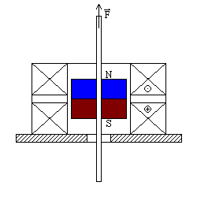
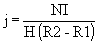
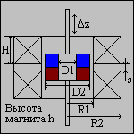
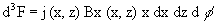
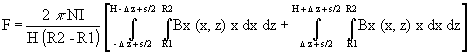
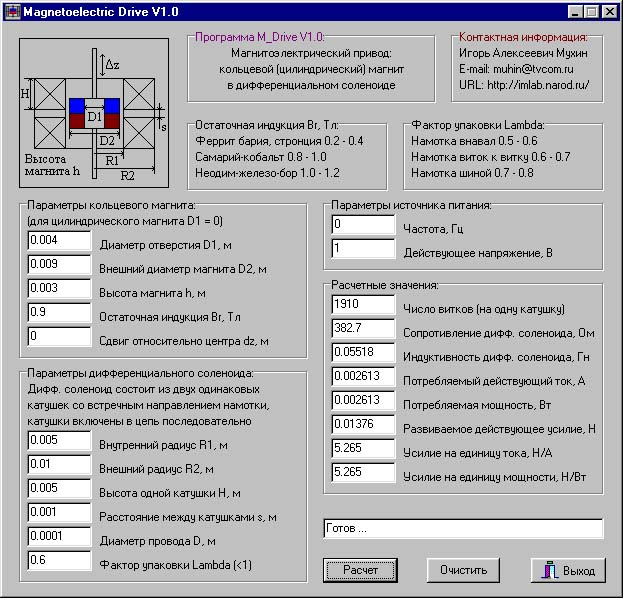

M_Drive: Программа расчета магнитоэлектрического привода
Введение

Рис. 1. Схема магнитоэлектрического привода.
Магнитоэлектрический привод - кольцевой или цилиндрический постоянный магнит с аксиальным направлением намагниченности, помещенный в дифференциальный соленоид [4]. Закрепленный на основании дифференциальный соленоид состоит из двух катушек, направление намотки которых встречное. Соответственно, встречным будет и направление тока в катушках. При пропускании тока через соленоид между магнитом и током возникает взаимодействие, проявлением которого является способность магнита оказывать силовое воздействие (F) в осевом (аксиальном) направлении на прикрепленный к нему шток.
Теория
Рис. 2. Представление цилиндрического постоянного магнита эквивалентным соленоидом.
Постоянный магнит с аксиальным направлением намагниченности, в частности, цилиндрический, можно рассматривать как однослойный соленоид с бесконечно тонкой обмоткой, геометрически соответствующей боковой поверхности магнита, по которой течет намагничивающий ток I (см. рис. 2). Условием эквивалентности магнита и соленоида является равенство их магнитных моментов. Магнитный момент магнита (P) может быть найден по формуле:
P = M V = M S H, где M – намагниченность магнита, V – его объем, S – площадь сечения, H – высота.
Магнитный момент эквивалентного соленоида:
P = j H S, где j = I/H – линейная плотность намагничивающего тока.
Тогда:
j = M
Для материалов с прямоугольной петлей гистерезиса (феррит бария, феррит стронция, неодим-железо-бор, самарий-кобальт и т. п.):
M ~ Br/m0, где Br – остаточная индукция, m0 = 4p10-7 Гн/м – магнитная постоянная. Таким образом, линейную плотность намагничивающего тока можно выразить приближенной формулой:
j = Br/m0
Кольцевой постоянный магнит с аксиальным направлением намагниченности может быть представлен как два однослойных цилиндрических соленоида с бесконечно тонкими обмотками, вложенные друг в друга. Соленоид диаметром D2 и высотой H соответствует внешней боковой поверхности магнита, а соленоид диаметром D1 и высотой H – внутренней поверхности отверстия. Намагничивающие токи в соленоидах равны по величине и противоположны по направлению.
Рассчитать величину и направление вектора магнитной индукции B в произвольной точке магнитного поля, создаваемого в вакууме (или воздухе) однослойным соленоидом с известной линейной плотностью тока, можно с помощью закона Био – Савара – Лапласа [5]:

где dl – вектор элемента проводника, численно равный dl и проведенный в направлении тока, r – радиус-вектор, проведенный из этого элемента проводника в рассматриваемую точку поля, r = mod(r). Этот принцип положен в основу программы A_Magnet [1].
Сила воздействия на магнит со стороны дифференциального соленоида с током по третьему закону Ньютона равна силе воздействия на дифференциальный соленоид с током со стороны постоянного магнита, то есть силе Ампера. Сила Ампера – сила, действующая со стороны магнитного поля на проводник с током [5]. Элементарная сила Ампера dF, действующая на малый элемент dl длины проводника, по которому идет электрический ток I, равна:

где dl – вектор, численно равный длине dl элемента проводника и направленный в ту же сторону, что и вектор j плотности тока в этом элементе проводника. Когда векторы dl и B взаимно перпендикулярны, то направление силы dF можно найти по правилу левой руки: если ладонь левой руки расположить так, чтобы вектор магнитной индукции входил в ладонь, а четыре вытянутых пальца указывали бы направление электрического тока, то отставленный большой палец укажет направление силы, действующей со стороны поля на проводник. Сила Ампера, возникающая за счет аксиальной компоненты магнитной индукции поля магнита, имеет только радиальную составляющую. Ее воздействие на соленоид сводится к его радиальному сжатию (растяжению). Таким образом, развиваемое приводом усилие определяется только радиальной компонентой Bx индукции магнитного поля постоянного магнита. Причем радиальная компонента индукции магнитного поля постоянного магнита и вектор плотности тока в соленоиде взаимно перпендикулярны.
Плотность тока в обмотке соленоида равна отношению числа ампер-витков к площади поперечного сечения соленоида:

где N – число витков одной катушки соленоида, I – действующее значение тока через соленоид, H – высота одной катушки дифференциального соленоида, R1 – внутренний радиус дифференциального соленоида (радиус отверстия), R2 – внешний радиус дифференциального соленоида.

Тогда для силы Ампера можно записать:

где dl = xdf – элемент длины проводника обмотки в цилиндрической системе координат. Учитывая возможное смещение магнита по оси z от центра на величину Dz, зазор между катушками s, а также противоположное направление тока в разных половинах дифференциального соленоида, получаем с учетом осевой симметрии системы:

Расчет дифференциального соленоида может быть сделан с использованием решений, заложенных в программу Coil [2], и методики расчета индуктивности системы из двух соосных цилиндрических соленоидов [8].
Программа Magnetoelectric Drive (M_Drive)

Рис. 3. Внешний вид окна программы M_Drive (версия 1.0).
Входные данные:
D1 - диаметр отверстия магнита, м
D2 - внешний диаметр магнита, м
h - высота магнита, м
Br - остаточная индукция материала магнита, Тл
dz - смещение магнита относительно центра, м
R1 - внутренний радиус дифференциального соленоида (радиус отверстия), м
R2 - внешний радиус дифференциального соленоида, м
H - высота одной катушки дифференциального соленоида, м
s - расстояние между катушками дифференциального соленоида (толщина прокладки),
м
D - диаметр обмоточного провода без изоляции (для проводов прямоугольного
сечения производится пересчет по формуле D=(4s/p)1/2,
где s - площадь поперечного сечения провода, м2), м
Lambda - фактор упаковки (отношение площади, занятой проводом в поперечном
сечении соленоида без учета изоляции, к площади поперечного сечения соленоида)
[11]
Частота выходного напряжения источника питания, Гц
Действующее значение напряжения источника питания, В
Выходные данные:
Число витков одной катушки дифференциального соленоида
Сопротивление дифференциального соленоида (суммарное сопротивление катушек), Ом
Индуктивность дифференциального соленоида, Гн
Потребляемый от источника ток (действующее значение), А
Потребляемая от источника, Вт
Развиваемое усилие (действующее значение), Н
Усилие в расчете на единицу тока, Н/А
Усилие в расчете на единицу мощности, Н/Вт
Расчеты производятся в системе СИ. Результаты выводятся на экран монитора.
Демонстрационная версия программы M_Drive:
Версия 1.0: M_Drive10d.rar (~92 Кбайт)
Демонстрационная версия программы позволяет рассчитывать усилие, развиваемое магнитоэлектрическим приводом только при центральном положении магнита (dz = 0), а все остальные параметры - как в основной версии. Время одного расчета может составлять до нескольких секунд при использовании компьютера с процессором Pentium-I 200 МГц или аналогичным. Программа может работать с операционными системами (ОС) Windows 3.1, Windows 95, 98 и XP (с другими ОС семейства Windows не проверялась).
Файл M_Drive10d.rar необходимо распаковать в заранее созданную папку. Упаковка производилась с помощью WinRAR 2.80. Результат распаковки: M_Drive10d.exe - исполняемый файл программы. После запуска программы можно вводить входные данные и производить расчет нажатием соответствующей кнопки. Входные данные (D1 - диаметр отверстия в магните, D2 - внешний диаметр магнита, h - высота магнита, dz - смещение магнита относительно центра (dz = 0), R1 - внутренний радиус дифференциального соленоида, R2 - внешний радиус дифференциального соленоида, H - высота одной катушки дифференциального соленоида, D - диаметр обмоточного провода) необходимо вводить в метрах (учитывайте принятый в ОС формат разделителя для десятичной дроби: точка или запятая, например, 0.005 или 0,005; необходимо установить точку или при необходимости вводить данные с запятой). Остаточная индукция Br вводится в теслах, действующее значение напряжения источника питания в вольтах, частота - в герцах. Проверить правильность расчетов можно по рис. 3.
Скопированные файлы могут быть проверены на отсутствие вирусного кода в режиме on-line [10].
По вопросу получения полной версии программы обращайтесь к автору (см. раздел Контактная информация).
Ссылки:
11.11.2005
20.02.2006
22.06.2010
Альтернативные источники
энергии
Компьютеры и
Интернет
Магнитные поля
Механотронные системы
Перспективные
разработки
Электроника и
технология